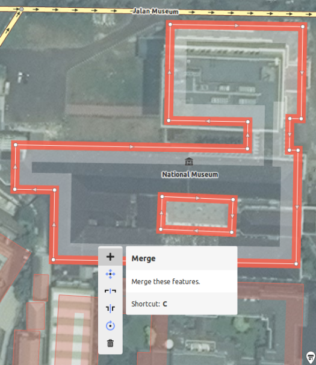
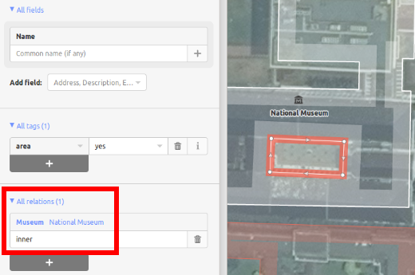
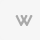

iD editor gyorstalpaló¶
Az iD editor gyakorlatilag aböngésző alapú OpenStreetMap szerkesztő. Az iD gyors és könnyen használható és lehetővé teszi a térképezést különböző forrásokból, mint például műhold és légi felvételek, GPS, jegyzőkönyvek vagy Mapillary.
Az iD editor egy nagyszerű lehetőség a kis és egyszerű módosításokra, melyek nem igénylik a JOSM speciális funkcióit (egy kifinomultabb térkép szerkesztő). Ez a fejezet az alap szerkesztéseket mutatja be az iD-vel.
iD Editor indítása¶
Az iD editornak egy aktív internet kapcsolatra van szüksége.
Nyissa meg az internet böngészőjét és menjen az OpenStreetMap honlapra https://www.openstreetmap.org.
Jelentkezzen be az OpenStreetMap bejelentkezésével.
Tolja el és nagyítsa a térképet a szerkesztendő területre. Tolhatja a bal egérgomb nyomva tartásával és a térkép húzásával a szükséges területre.
Kattintson a kis nyílra az Edit mellett. Majd kattintson az Edit with iD (in-browser editor)-ra.


- [1] Edit Feature Panel: Ez a panel a térképen kiválasztott objektum tegjeit mutatja
selected on the map. You can add or edit tags from this panel.
[2] *Tools: Ez a panel az alapvető szerkesztő eszközöket tartalmazza:
[3] Map panel: Ez a panel különböző konfigurációs funkciókat jelenít meg.
- [4] Information panel: Ez a panel különböző információkat mutat mint például
a lépték vonalzó. melyik felhasználó dolgozott a területen.
Háttér réteg konfigurálása¶
Kattintson a Background settings gombra vagy használja a b gyorsbillentyűt.


A fényességi szint változtatásához kattintson a az egyikre a téglalapok közül, a lehetséges szintek 100%, 75%, 50%, és 25%

Módosíthatja a háttér réteget is a kívánt csempe szolgáltató alapján (az alapértelmezett a Bing Aerial Imagery).
A Custom-ra kattintva hozzáadhatja a saját térképcsempéit. Például, ha egy terepi papírtérképet [1] akar hozzáadni, kattintson a Custom-ra , utána kattintson a nagyító (keresés) ikonra a következő ablak megnyitásához:

Írja be a FieldPaper snapshot URL-jét ami valami ilyesmi: http://fieldpapers.org/snapshots/cqhmf2v9#18/37.80593/-122.22715
GPS trackek megjelenítéséhez a számítógépéről (GPX formátum) húzza a GPX fájlt az iD szerkesztőre és engedje el.
Az OpenStreetMap GPS nyomvonalak bekapcsolásához kattintson a négyzetbe- Az alábbi képen a GPS nyomvonalak különböző színekkel jelennek meg, az utazás irányát jelölve.

If there is imagery offset, it can be corrected by clicking Fix Alignment.

Kattintson a navigációs gombokra a kép mozgatásához. Kattintson a visszaállít gombra a visszatéréshez az alapértelmezett pozícióhoz.

Pontok hozzáadása¶
Egy új pont hozzáadásához kattintson a Point gombot. 
Az egér mutató plusz (+) jellé változik. Most kattintson egy pozícióba, ahol meg akar jelölni egy helyet. Például, ha tudja, hogy van egy kórház a területén, kattintson a kórház épület helyére.

Vegye észre, hogy egy új pontot adtunk hozzá. Ezzel egyidőben megváltozik a baloldali panel, egy űrlapot jelenít meg, ahol kiválaszthatja az objektum attribútumait. Kattintson a Hospital Grounds-ra, hogy a pontot kórházként jelölje meg.

Az űrlapokat használhatja a pont részletes adatainak megadására. Kitöltheti a kórház nevét, címét és/vagy más további információt. Ne feledje, hogy minden elemnek különböző beállításai lesznek, attól függően, hogy melyik címkét választja a funkciópanelből.
Ha hibázik, például rossz a pozíció, áthelyezheti a pontot egy új helyre úgy, hogy az egér bal gombját lenyomva tartja, és áthúzza. Vagy, ha törölni szeretné a pontot, kattintson az egér bal gombbal a pontra, aktiválja a helyi menüt a jobb egérgombbal kattintva, majd kattintson a gombra, amely úgy néz ki, mint egy szemétláda. | image23 |
Az iD szerkesztőben létrehozott „pontunk” aktuálisan egy önálló „csomópont” a „címkék” egy csoportjával.
Vonalak rajzolása¶
Egy új vonal hozzáadásához kattintson a Line gombra 
Az egér mutató plusz (+) jellé változik. Keressen a térképen még nem megrajzolt utat és kövesse azt. Kattintson a pontra ahol az útszakasz kezdődik, mozgassa az egerét és kattintson a további pontokra. Duplán kattintson a rajzolás befejezéséhez. Figyelje a baloldali panelt.

Ugyanúgy mint egy pontnál, válassza ki a megfelelő címkéket a vonalához.
Elhúzhatja a vonal pontjait a bal egérgombbal kattintson egy pontra és húzza el azt.
Teljes vonalat is mozgathat, válassza ki a vonalat és válassza a Mozgatás eszközt. Ezután húzza a vonalat egy új pozícióba.
Ha rákattint a bal egérgombbal egy vonal bizonyos pontjára (csomópontjára) és a jobb egérgombra kattintva aktiválja a helyi menüt, ezeket az eszközöket fogja látni:
Pont törlése a vonalból.

Pont leválasztása a vonalról.

Vonal szétvágása két vonalra a szelektált pontnál.

Amikor a bal egérgombbal egy vonalra (de nem egy pontra) kattint, ezeket az eszközöket látja:
Vonal törlés.
Kör létrehozása egy vonalból (csak akkor aktív, ha zárt a vonal)

Négyzet alakzat kialakítása egy vonalból (csak akkor aktív, ha zárt a vonal)

Vonalirány megfordítása (hasznos folyókhoz és egyirányú utcákhoz)

Az iD szerkesztőben létrehozott „vonal” tulajdonképpen egy „út” „címkékkel”.
Megjegyzés
Egy speciális megjegyzés a Törléshez: általánosságban kerülni kell mások térképezésének a törlését, ha csak javításra szorul. Törölheti a saját hibáit, de meg kell próbálnia javítani más emberek által térképezett objektumokat, ha módosítást igényelnek. Ez megőrzi az elemek történetét az OSM adatbázisban és tisztességes a térképező társakkal szemben. Ha igazán úgy érzi, hogy törölni kellene valamit, fontolja meg az eredeti térképező vagy az egyik OSM levelezőlista megkérdezését erről először.
Alakzatok (zárt idomok) rajzolása¶
Egy új több oldalú alakzat hozzáadásához kattintson a terület gombra.

{kind=link}
Az egérkurzor plusz (+) jellé változik. Próbáljon egy épületet követni a képet használva útmutatóként.
Észreveheti, hogy az alakzat színe a hozzá hozzárendelni kívánt attribútumtól függően megváltozik.

Egy alakzat kiválasztása és a jobb gombbal a felbukkanó menü aktiválása esetén a rendelkezésre álló eszközök hasonlóak ahhoz, amikor egy vonalra kattint.
Egy zárt alakzat az iD szerkesztőben címkékkel ellátott „zárt út”.
Többsrészű zárt alakzatok rajzolása¶
Időnként egy olyan zárt idomot kell rajzolnia, mely nem csak egy külső határral, hanem egy vagy több belső határral rendelkezik. Gondoljon egy épületekre belső udvarral vagy tavakra szigetekkel. Ne rajzolja ezeket egy vonallal, úgy hogy a belső körvonalat ráakasztja a külsőre. Inkább ezeket a körvonalakat rajzolja meg külön, kapcsolja a címkéket csak a külső körvonalhoz, válassza ki az összes körvonalat és nyomja meg a c billentyűt, hogy egy többszörös körvonallal rendelkező elemmé tegye őket össze.

Amikor az újonnan létrehozott többszörös határral rendelkező elem bármelyik körvonalát kiválasztja, a bal oldalon láthatja melyik elemhez tartozik az

Változtatásainak mentése¶
Amikor (és ha) menteni akarja a szerkesztéseit az OpenStreetMap-be kattintson a Save* gombra. A baloldali panel jeleníti meg a feltöltés panelt.

Írja be a megjegyzését a szerkesztéseihez és kattintson a Save-re.
Megjegyzés
Ha ugyanazt a elemet (pont, út, terület) ugyanakkor szerkeszti amikor egy másik személy szerkeszti azt, egy figyelmeztetést kap, hogy a szerkesztései nem tölthetők fel amíg a konfliktusokat nem oldja fel. - válasszon kinek a szerkesztését fogadja el és töltse fel a módosításait. A konfliktusok feloldása gyakran más személyek szerkesztéseinek elfogadását jelenti, ebben az esetben vissza kíván térni a kérdéses elem szerkesztéséhez (**ezúttal mentsen gyorsan a szerkesztés után, hogy megpróbálja elkerülni a konfliktust!*).*
További információ és egyéni címkék hozzáadása¶
Ha egy objektumot szerkeszt, akkor az attribútum panel alján megjelenik egy ikonsáv. Az ikonokra kattintva további információkat is hozzáadhat:
Magasság hozzáadása

Kontaktok / telefonszámok hozzáadása

Forrás címke hozzáadása

Weboldal hozzáadása

Kisegítő lehetőségekkel kapcsolatos információk hozzáadása

Wikipedia link hozzáadása 
{kind=link}
{kind=link}
Vagy egyéni címkéket adhat meg a Minden címké-re kattintva. 
Ez megmutatja az elemhez kapcsolt összes címkét.

Kattintson a plusz (+) jelre kulcsok és értékek hozzáadásához vagy kattintson a szemetes ikonra a címkék törléséhez.
Mi a következő?¶
Próbálja ki a LearnOSM dokumentációt, melyből ezt a gyorstalpaló származik: https://learnosm.org/en/beginner/id-editor/